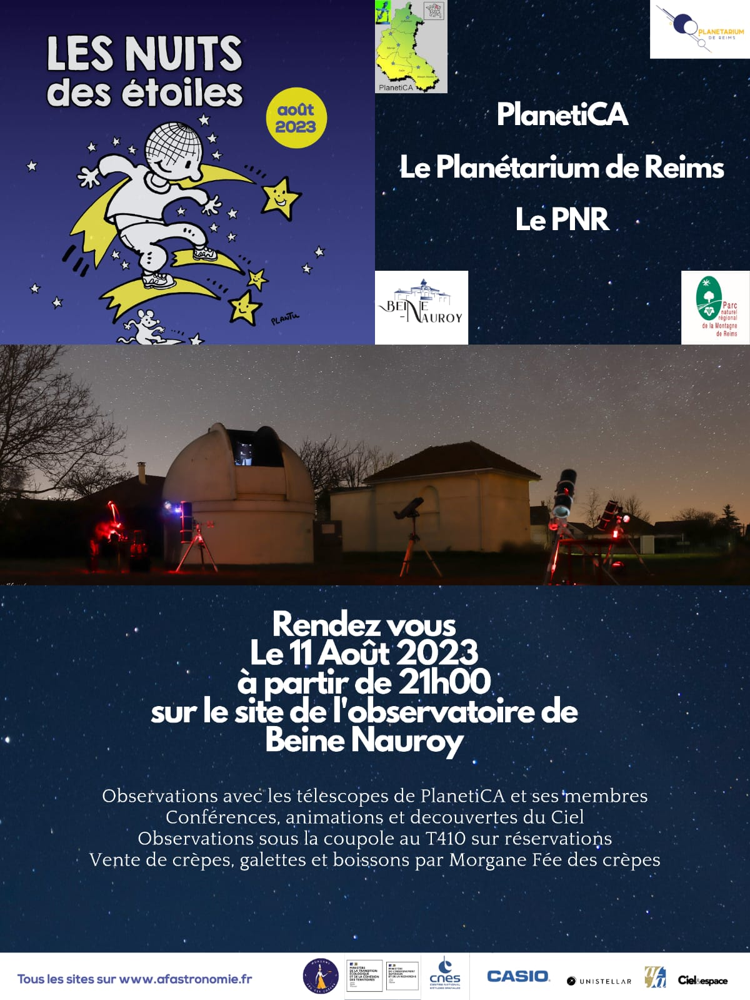
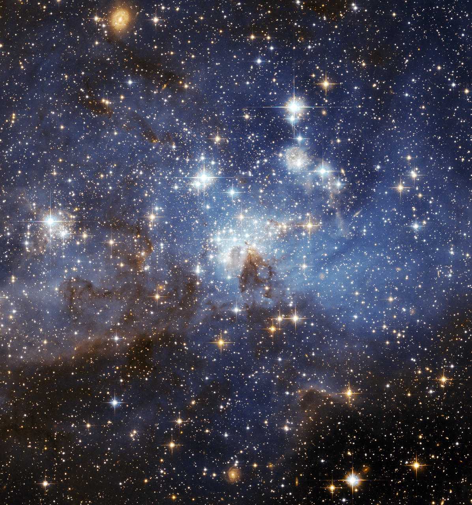

Le samedi 28 octobre prochain à partir de 21h, le planétarium de Reims et ses partenaires d’Epinal et de Strasbourg seront au rendez-vous.
Vous le savez peut-être déjà, il s’agit de la date de la prochaine éclipse (partielle) de Lune !
Une retransmission en direct de l'évènement est prévue sur la chaine youtube du planétarium de Reims, mais également si le temps le permet, une observation du phénomène à l’œil nu ou aux instruments depuis les jardins du planétarium sera organisée.
Une animation astronomique est prévue à Aguilcourt le 26 Août 2023.
Cette animation débutera en milieu d'après midi avec de l'observation solaire, et se poursuivra le soir avec de l'observation du ciel nocturne.
Bonne nouvelle pour tous!
Les réservations pour l'accès au Télescope de 410mm sous la coupole sont ouvertes :
Réservation du téléscope pour la nuit des étoiles
Nous vous accueillerons avec le Planétarium de Reims et le Parc Naturel Régional de la Montagne de Reims sur le site de l'observatoire de Beine-nauroy Commune le 11 Août 2023 à partir de 21h pour la Nuit des Etoiles 2023 .
Animation, conférences, activités, observations et découvertes du Ciel en compagnie d'astronomes amateurs et de passionnés.
Et tout cela en compagnie de Morgane fée des crêpes qui vous régalera avec ces crêpes et galettes.
N'hésitez pas, venez nous rejoindre !

Bon Ciel à vous !
Conférence par Philippe Simonnet de l'association Planética
Mercredi 31 mai 2023 à 19h00
Salle des mariages de la Mairie de Taissy

La contemplation d’un beau ciel nocturne en rase campagne nous permet d’observer environ 3 000 étoiles à l’œil nu ; mais notre galaxie, la Voie Lactée, en comprend plusieurs centaines de milliards à elle seule. Cette multitude nous paraît immuable, pourtant nous savons maintenant qu’elle est sujette à un renouvellement permanent à une échelle de temps se mesurant en millions voire en milliards d'années. Les étoiles ne sont pas éternelles, cependant un formidable et continuel recyclage cosmique de la matière permet la formation de nouvelles étoiles au sein de nébuleuses « pouponnières » qui peuvent en générer des milliers chacune. Grâce à des instruments d’observation de plus en plus performants, l’évolution de nos connaissances nous permet maintenant de comprendre une partie des mystères d’un des plus heureux événements de l’univers : la naissance d’une étoile.

Le 10 février, l'observatoire de Beine-Nauroy invite à la découverte des nébuleuses du ciel d'hiver.
Plus d'informations au 03 26 35 34 70

Vendredi 7 août de 21h à minuit:
- Mini-conférences
- Apprendre à reconnaitre les constellations à l’œil nu et à repérer les objets célestes aux
jumelles.
- Observation commentée avec les télescopes de l’observatoire.
- Photographie au télescope avec votre smartphone.
Le déroulement des observations astronomiques dépendra des conditions météorologiques.
Dans ce contexte sanitaire exceptionnel l’accès aux différents sites sera limité.
Les visiteurs sont invités à venir avec leurs propres jumelles.
La réservation par téléphone de l'observation dans la coupole du télescope de 410mm est obligatoire : 03.26.35.34.70.